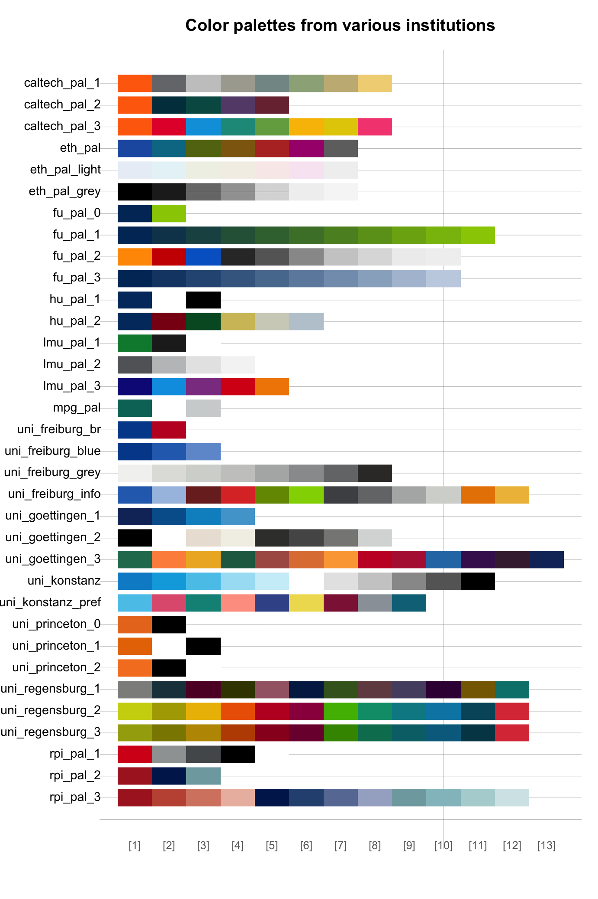
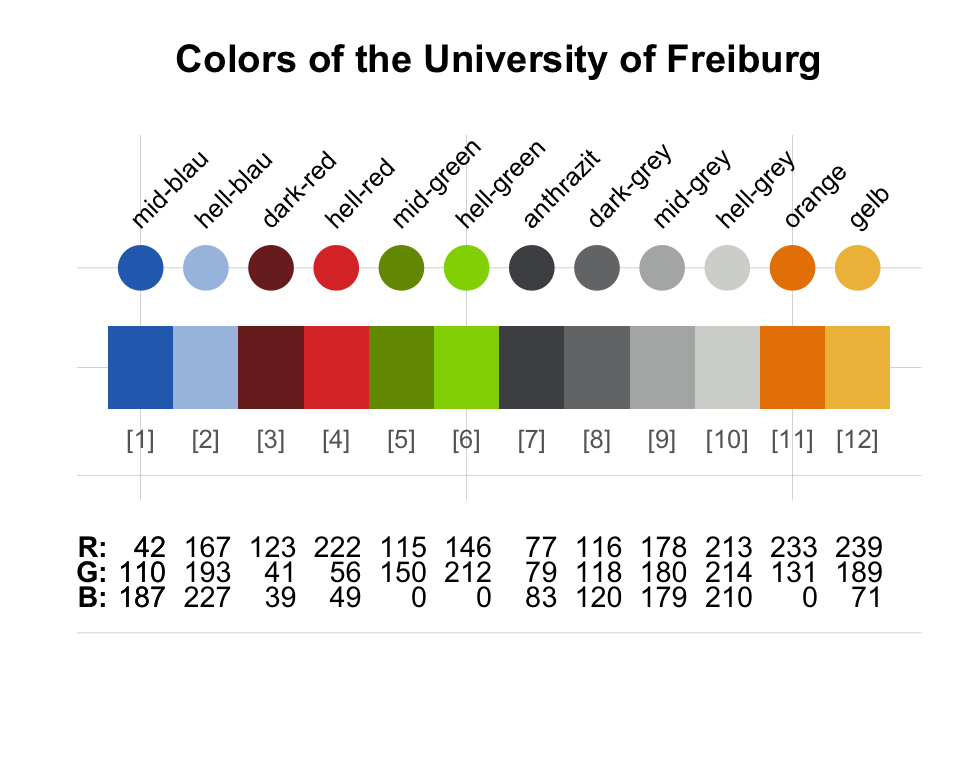
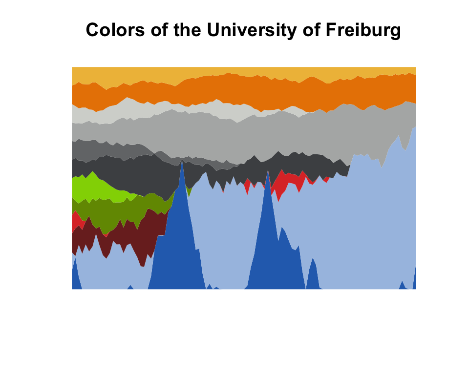
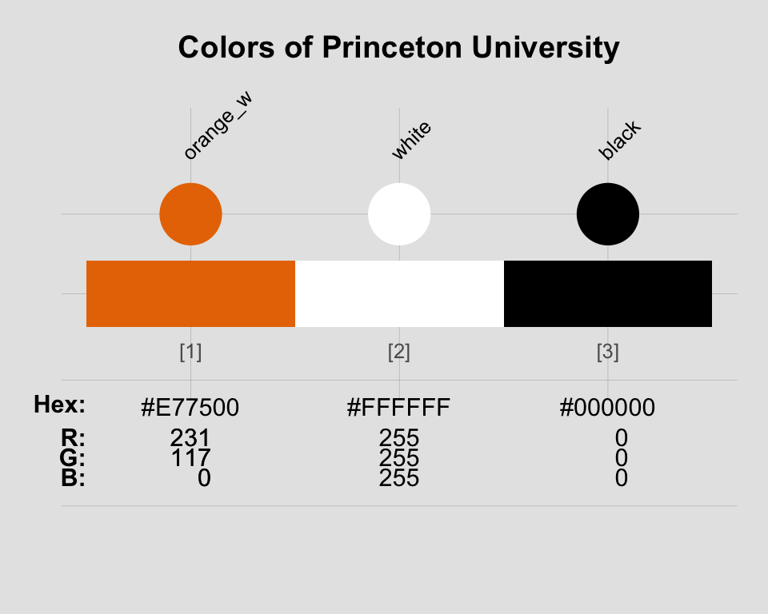
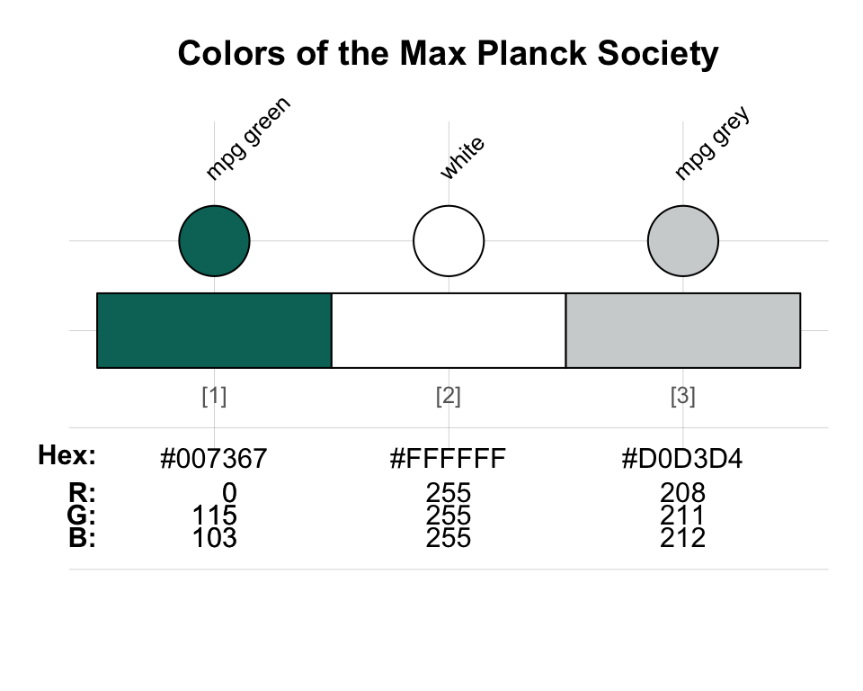
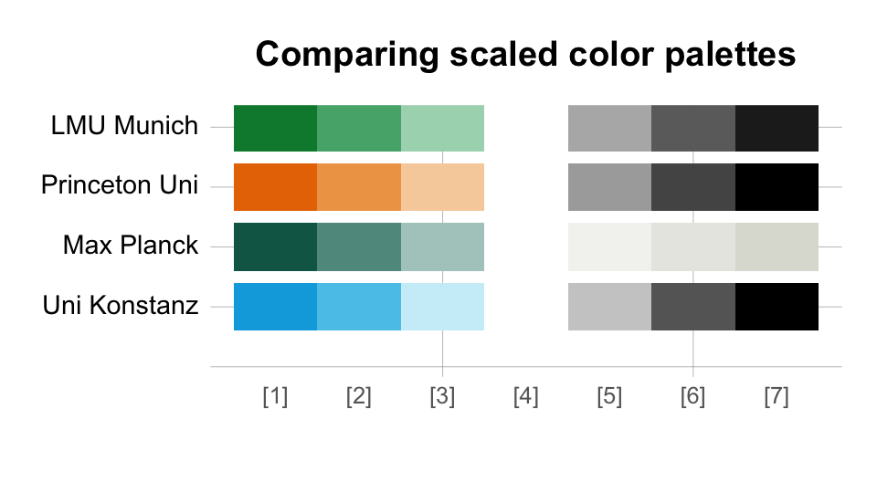

The color palettes included in the unikn package are based on the CD manual of the University of Konstanz. However, the functionality provided by the package makes it easy and straightforward to define and use your own colors.
This vignette first shows which color palettes from other institutions are currently provided by the unikn package. As these will never be complete, it then explains how the color-related tools of unikn can be used for creating new color palettes. (For a general introduction to the package’s colors, color palettes, and color functions, see the vignettes on Colors and color functions and Color recipes. The vignette on text provides information on creating text boxes and decorations.)
We install or load the unikn package to get started:
Current color palettes
Overview
In addition to the specific color palettes of the University of Konstanz, unikn currently provides the general color palettes of the following institutions:
-
ETH Zurich:
eth_pal,eth_pal_light,eth_pal_grey -
Max Planck Society:
mpg_pal -
University of Freiburg:
uni_freiburg_br,uni_freiburg_blue,uni_freiburg_grey,uni_freiburg_info
-
University of Konstanz:
uni_konstanz,uni_konstanz_pref -
Princeton University:
uni_princeton_0,uni_princeton_1,uni_princeton_2
These palettes are exported (as named vectors) and documented (to credit their contributors and sources). We can use and modify these palettes with the unikn color functions:
seecol("add", main = "Color palettes from various institutions")
Call for contributions
Collecting color palettes
Are you using unikn to create your own color palettes?
If so, please let us know (e.g., by posting on this GitHub issue)!We collect color palettes from other institutions to make them available in future versions of unikn.
To enable us to verify and provide appropriate credit to your contributions, please provide us with the following information:
- your code (e.g., the
newpal()command creating your color palette),
- your source (e.g., some URL with color definitions),
- your name and some contact information (e.g., an Email address).
We’re looking forward to your inputs and contributions!
Defining colors and color palettes
The following examples show how to define color palettes (with dedicated color names) for three institutions. They can be easily adapted to any other group, company, or entity, that uses some pre-defined set of colors.
A. University of Freiburg, Germany:
The Albert-Ludwigs Universität
Freiburg provides fairly extensive information on its corporate
color scheme (available at
portal.uni-freiburg.de/cmsforum/wsg/webstyleguide/farben on
2022-10-20). Colors can be defined in a variety of ways, but R comes
with convenient tools (like the col2rgb() and
convertColor() functions of grDevices) to
handle most cases. The most straightforward way of creating a new color
palette in R is by using its HEX/HTML code (provided in character
format). As the University of
Freiburg kindly provides their colors in this format, we can easily
define the corresponding color palettes as named vectors:
# Source: http://portal.uni-freiburg.de/cmsforum/wsg/webstyleguide/farben
# Basic colors: ----
uni_freiburg_br <- c("#004a99", "#c1002a")
names(uni_freiburg_br) <- c("uni-blau", "uni-rot")
uni_freiburg_bwr <- c("#004a99", "white", "#c1002a") # add "white" for better gradients
names(uni_freiburg_bwr) <- c("uni-blau", "weiss", "uni-rot")
# Web colors: ----
uni_freiburg_blue <- c("#004a99", "#2a6ebb", "#6f9ad3")
names(uni_freiburg_blue) <- c("blue-1", "blue-2", "blue-3")
uni_freiburg_grey <- c("#f2f3f1", "#e0e1dd", "#d5d6d2", "#c9cac8",
"#b2b4b3", "#9a9b9c", "#747678", "#363534")
names(uni_freiburg_grey) <- c("grey-0", "grey-1", "grey-2", "grey-3",
"grey-5", "grey-7", "grey-9", "grey-font")
# Visualizations / illustrations: ----
uni_freiburg_info <- c("#2a6ebb", "#a7c1e3", "#7b2927", "#de3831", "#739600", "#92d400",
"#4d4f53", "#747678", "#b2b4b3", "#d5d6d2", "#e98300", "#efbd47")
names(uni_freiburg_info) <- c("mid-blau", "hell-blau", "dark-red", "hell-red", "mid-green", "hell-green",
"anthrazit", "dark-grey", "mid-grey", "hell-grey", "orange", "gelb")Alternatively, we can define both colors and names in one step by
using the newpal() function:
uni_freiburg_info <- newpal(col = c("#2a6ebb", "#a7c1e3", "#7b2927", "#de3831", "#739600", "#92d400",
"#4d4f53", "#747678", "#b2b4b3", "#d5d6d2", "#e98300", "#efbd47"),
names = c("mid-blau", "hell-blau", "dark-red", "hell-red", "mid-green", "hell-green",
"anthrazit", "dark-grey", "mid-grey", "hell-grey", "orange", "gelb")
)Using newpal() makes it easy to combine colors and their
names and return the resulting color palette in either data frame or
vector format.
Once a new color palette has been defined (in your current R environment), use all color-related functions to view, modify, and use the palette:
# View color palette:
seecol(uni_freiburg_info, main = "Colors of the University of Freiburg")
# seecol(uni_freiburg_bwr, n = 7) # extend color palette
# seecol(c(uni_freiburg_blue, "white", uni_freiburg_grey)) # mix color palette
# use in a demo plot:
demopal(uni_freiburg_info,
type = 4, col_par = NA, seed = 79098,
main = "Colors of the University of Freiburg")
B. Princeton University, USA:
The color scheme of Princeton University is easily recognized by its combination of orange with black and white elements. The official guidelines (available here) define “Princeton Orange” as Pantone (PMS) 158 C.
-
The PANTONE™ color finder at https://www.pantone.com/connect/158-C yields the following color values:
- RGB:
232 119 34
- HEX/HTML:
#E87722
- CMYK:
0 62 95 0
- RGB:
-
However, the guide also specifies and distinguishes between two additional versions of orange (depending on background color) and provides the following HEX/HTML values for them:
- Orange on white: “#E77500”
- Orange on black: “#F58025”
- Orange on white: “#E77500”
These definitions suggest defining three separate versions of orange and corresponding color palettes:
# 3 shades of orange:
orange_basic <- "#E87722" # Pantone 158 C
orange_white <- "#E77500" # orange on white background
orange_black <- "#F58025" # orange on black background
# Defining color palettes:
uni_princeton <- c(orange_basic, "black")
names(uni_princeton) <- c("orange", "black")
# Define color palette and names (in 2 steps):
uni_princeton_1 <- c(orange_white, "white", "black")
names(uni_princeton_1) <- c("orange_w", "white", "black")Again, we can define a palette of named colors in one step:
# Basic colors:
uni_princeton_0 <- newpal(col = c(orange_basic, "black"),
names = c("orange", "black"))
# 1st color palette (on white backgrounds):
uni_princeton_1 <- newpal(col = c(orange_white, "white", "black"),
names = c("orange_w", "white", "black"))
# 2nd color palette (on black backgrounds):
uni_princeton_2 <- newpal(col = c(orange_black, "black", "white"),
names = c("orange_b", "black", "white"))and then inspect a new color palette (with a custom background color and title):
seecol(uni_princeton_1, col_bg = "grey90",
main = "Colors of Princeton University")
C. Max Planck Society, Germany:

The CD manual (available here) of the Max Planck Society specifies the use of two primary colors:
-
Green as Pantone 328: Using the PANTONE™ color finder at https://www.pantone.com/connect/328-C yields the following color values:
- RGB:
0 115 103
- HEX/HTML:
#007367
- CMYK:
100 10 61 38
- RGB:
-
Grey as Pantone 427: Using the PANTONE™ color finder at https://www.pantone.com/connect/427-C yields the following color values:
- RGB:
208 211 212
- HEX/HTML:
#D0D3D4
- CMYK:
7 3 5 8
- RGB:
Again, the easiest way of defining a corresponding color palette is
by defining the elementary colors and then combine them into a named
color palette by using the newpal() function. To enable
color gradients, we insert the color "white" between the
two dedicated colors:
# Main colors (using HEX values):
mpg_green <- "#007367"
mpg_grey <- "#D0D3D4"
# Create new color palette (as a vector):
mpg_pal <- newpal(col = c(mpg_green, "white", mpg_grey),
names = c("mpg green", "white", "mpg grey")
)As before, can now use the seecol() and
usecol() functions to view, modify, and use the new
mpg_pal color palette:
seecol(mpg_pal,
col_brd = "black", lwd_brd = 1,
main = "Colors of the Max Planck Society")
Comparing custom color palettes
Once a new palette has been defined (and is available in your current
R environment), the seecol() and usecol()
functions allow comparing, scaling, and using them in the same fashion
as the native unikn color palettes:
# Compare and extend custom color palettes:
# seecol(list(uni_freiburg_info, uni_freiburg_bwr, mpg_pal, uni_princeton_1))
# Scaled version:
seecol(list(uni_freiburg_bwr, uni_princeton_1, mpg_pal, pal_unikn), n = 9,
pal_names = c("Uni Freiburg", "Princeton Uni", "Max Planck", "Uni Konstanz"),
main = "Comparing scaled color palettes")
Resources
The following versions of unikn and corresponding resources are currently available:
| Type: | Version: | URL: |
|---|---|---|
| A. unikn (R package): | Release version | https://CRAN.R-project.org/package=unikn |
| Development version | https://github.com/hneth/unikn/ | |
| B. Online documentation: | Release version | https://hneth.github.io/unikn/ |
| Development version | https://hneth.github.io/unikn/dev/ |
Vignettes
The following vignettes provide instructions and examples for using the unikn colors, color palettes, and functions:
| Nr. | Vignette | Content |
|---|---|---|
| 1. | Colors | Colors and color functions |
| 2. | Color recipes | Recipes for color-related tasks |
| 3. | Institutional colors | Creating color palettes for other institutions |
| 4. | Text | Text boxes and decorations |